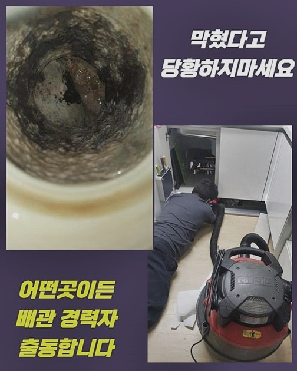
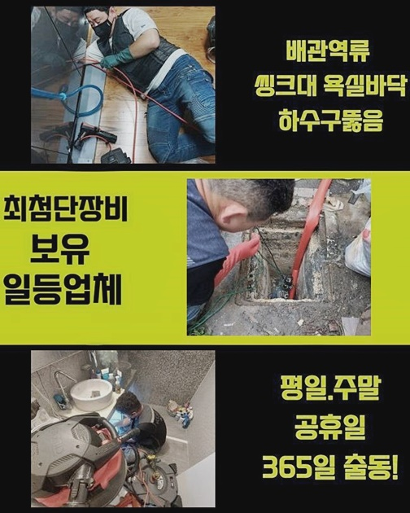
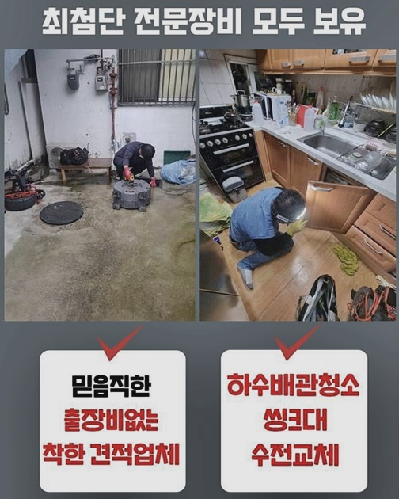
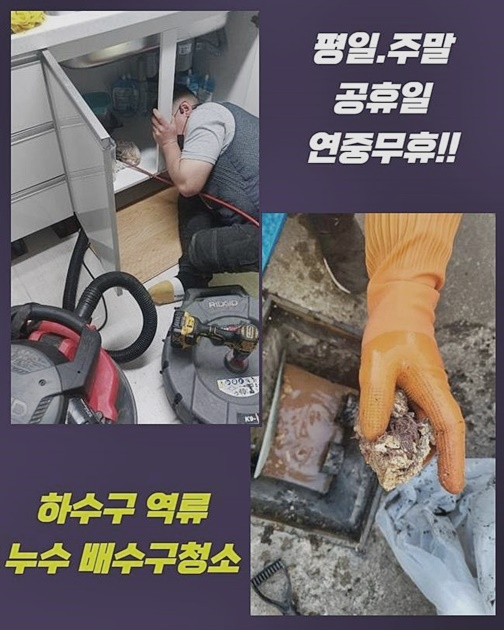
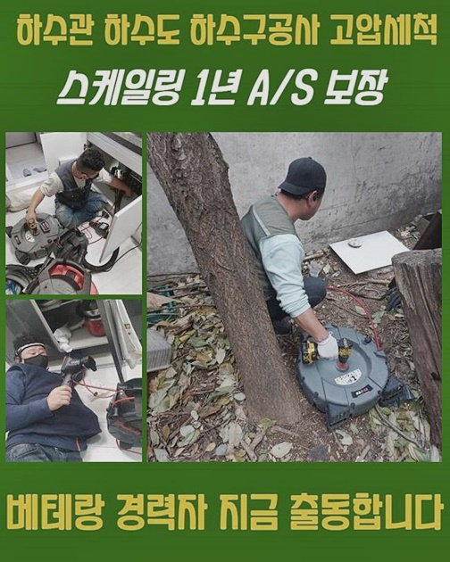
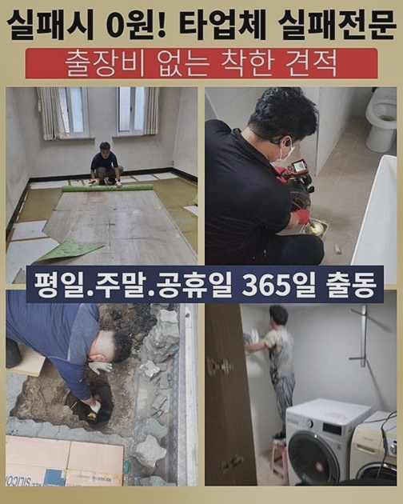

🏠 성동구 사근동대변기막힘 왕십리도선동 맨홀역류 설비
용인시 처인구 배관막힘 전문 시공 후기

📋 작업 개요
- 위치: 용인시 처인구, 수원시 영통구, 화성시 동탄
- 서비스 유형: 배관막힘, 누수수리, 고압세척, 내시경점검
- 작업 일시:
- 업체명: 하수구수사대 (010-5615-2118)
🔍 문제 상황
성동구 사근동대변기막힘 왕십리도선동 맨홀역류 설비
배수라인이 문제에 봉착했다면 최대한 조속하게 대응하는게 우선이죠
해당 사항을 방치한다면 갑자기 역으로 솟아오르는 경우도 생기며 누수되는 증상으로도 발전되며 시정에 방해요소가 발생될 수 있어요
배수로에서 솟구치는 문제들이 야기된 사태가 벌어졌다면 어쩔방도가 없겠지만 앞서서 예방차원에서 전문인력의 도움으로 해결해 보시는 것이 우선이죠
얼마전에 방문드린 곳은 상가가 함께 있는 경우였는데요 이러한 구조적 특성을 갖추고있다면 복합적인 시설을 가지고있는 사례들이 꽤 많은 탓에 유선으로는 안내가능한 사안이 많지않아요
때문에 오차없는 연유를 짚어내기위해서 현장당도를 마치고 진단을 해보고있죠
당도하니 상가들과 이어져있는 가정집 배수라인이 막혀버리고 역류되는 증상들이 나타났습니다
물이 솟구치는게 발생됨에따라 해결이 시급하다면 다양한 기기의 사용이 수행되어야합니다
그러므로 이런 상황일 시 당연하게도 심각한 문제들을 고쳐낸 전문진에게 문의를 해보심이 좋겠습니다
찾아뵙고 고객분의 내용전달을 바탕으로 문제들을 점검했어요
하나의 문제가 아니라 다양하게 여러지점이 막혀버린거면 점검해봐야하는 위치가 메인 배관이였습니다

🔎 원인 분석
💡 전문가 진단: 정밀 진단 장비를 사용하여 슬러지의 고착 여부를 판명하고 타격/세척 작업을 실시했습니다.
공동배수로를 살펴볼 생각으로 주차시설 천정부에 위치하고있던 배수관으로 가보았는데요
공동하수관을 확실히 해결해도 메인관과 이어져있는 관의 역류문제가 수월하게 해결되요
그렇지만 천정쪽의 라인인 까닭에 세척을 해주기에는 위험이 따랐는데요
이런 사태가 벌어졌다면 작업대를 놓고 전문가가 올라가죠
메인집수 라인이 막혀버렸을 시 떠다니는 것들을 흡입하여 청소시키는 석션으로는 완벽히 시정해내는게 쉽지않아요
샤프트장치로 스케일링을 한다던지 때에 따라서 고압수청소가 실시되어야 하죠
어떤과정이 수행되어야하는가 내측을 진단한 뒤 왜 발생되었는지 알기위하여 내시경을 삽입했죠
내시경기기로 깊숙한 지점까지 검수해본 결과 지금까지 퇴적된 기름잔해가 통로를 가로막고있어서 거꾸로 역류해버리는 모습이였습니다
곳곳마다 빠지지를 못해서 아무래도 거주지로 합쳐진 개별배수관으로 배수시킨다면 오수는 걷잡을 수 없이 넘칠거에요
그리하여 이 문제들을 의뢰인분에게 설명하고 이물제거를 수행해주었습니다
관로가 붉게 물들어가는데 해당 색처럼 보이게되는 이유들은 벽면에 잔해물이 존재하기때문이죠
비어있는 배관일땐 이러한 모습없이 배수관내부만 보이겠으나 이렇게 잔해물이 많을땐 영상으로 확실히 목격됩니다

🔧 작업 과정
저희 하수구막힘의 업체가 찾아갔던 장소에서의 결함들을 풀어낼 목적으로 샤프트장치를 이용해도 무분별하게 투입시키는게 아닌 필히 배관 내부 배수구를 확인해주며 진단을 실시하죠
혹시 과한 물리력이 동반된 경우라면 배수시설들을 파손시키게 할 수 있을 뿐 아니라 2차적인 피해로는 물샘이 생겨날 수 있어서 경험이 많은 업체들과 컨택해 진행하시는 것이 우선이죠
플렉스 샤프트 내시경장치로 꽤 오래도록 분쇄시키는 수순을 밟아나갔는데요
저희전문진이 달려갔던 곳의 이물질들이 누적된 것을 넘어 굳어진 기름때가 많아서 반복적인 단계가 필요했습니다
메인배관의 증상이 발발하게 되면 크기들이 크고 길게 자리하고 있어 군데군데 뚫어주는 작업들을 진행합니다
이런 증상들을 바로잡을 목적으로 화장실내측과 멀지않게 자리한 창고내부쪽과도 이어진 내측을 청결히해주는 수순도 속행되어야 했죠
소재구부분들을 즉시 열어버린다면 오수들이 떨어지게 될 불미스러운 일이 불가피하기에 챙겨온 비닐들로 보양도 빠트리지않고 실시했어요
아래쪽으로 하수가 배출될 수 있게 연결도 해주었죠
혹여 이런 부분까지 신경써주며 청소해주지 못할 시엔 단순히 통수는 이뤄지겠지만 마무리들은 깔끔한 경우는 드물죠
이것 또한 전문가가 배양하고있는 노하우라고 생각합니다
찾아뵌 곳은 화장실내측과 이어진 하수라인으로, 오염원이 대량으로 있었죠 일반적인 이물이 배수관 기능을 저해시키는게 보통이지만 있으면 치명적일 수 있는 이물질들이 결함의 주범이 되어버리기도 하죠
내측을 파악해보니 샤프트만 가지고서는 온전하게 세척하는것이 어렵겠단 판단이 들었는데요
이러한 때에는 적합한 고압청소기를 사용해서 세척해줘야합니다
차와 이어진 것보다는 컴팩트하지만 성능들은 뛰어나므로 문제에 알맞는 기기들을 선정하는것 또한 전문가의 자질이라고 판단하고 있어요
뚫기를 이어가며 위치별로 확실히 청소되었는지 답답한 기색이 사라진것인지 보고서 통수테스트 과정을 실시했습니다
저희의 전문가가 방문드렸었던 현장의 경우 내시경기기로 이상들이 잠재워진건지 테스트절차로 확인해주어야 완전하게 배수 작업이 이뤄졌다고 할 수 있습니다
비로소 오차없이 종료가되었어요 의뢰인분에게 완벽히 하수관을 공유시키고
그간 통수가 어려웠을 고객분이 한시름 놓으실거라는 생각을하니 보람까지 느꼈어요


✅ 작업 완료
하수 시스템 결함이 발생하여 작업들을 이어갈때 수많은 이물이 목격이됩니다
문제들이 외부로 드러났을때에 서둘러서 처리하도록 전문가를 통해 도움요청을 하시면 신속히 해결이 가능해도, 방치하여 미루게된다면 비용과 시간을 크게 소모하여 후회하며 진행하게될지 몰라요
해결하기 힘든 상황들에 놓여있어도 저희의경우엔 꾸준히 안정성을 갖춰 해결해드리고 있습니다
저희의경우 문제를 보고 적합한 작업방식을 실시해드리기에 염려없이 도움을 청하시면 되겠습니다
상업시설들과 가정과 같은형태로 물사용이 불가피한 곳일 경우 어디라도 뚫어내는 것에 집중하니 꾸준히지 부담없이 전화주시면됩니다



⚠️ 하수구 배관 막힘 예방 및 관리 가이드
- ✅ 머리카락, 비닐, 물티슈 등 물에 분해되지 않는 이물질은 절대 흘려보내지 마세요.
- ✅ 기름기 많은 식기는 설거지 전 키친타올로 먼저 기름때를 닦아내세요.
- ✅ 주기적으로 배수구에 뜨거운 물을 가득 부어주어 유지방 고착을 방지하세요.
- ✅ 작업 후 1년 이내 재발 시 무상 A/S 보증 서비스를 제공합니다.
💡 핵심 정리
- 확실한 장비 작업(내시경 점검 및 샤프트 스케일링)으로 원인을 뿌리 뽑습니다.
- 작업 후 1년 이내에 동일한 부위 재발 시 100% 무상 A/S 서비스를 보장합니다.
- 서울 · 경기 · 인천 전 지역에 24시간 언제든 긴급 출동할 수 있도록 항시 대기 중입니다.
❓ 자주 묻는 질문 (FAQ)
🚨 용인시 처인구 배관막힘 문제로 고민이신가요?
정확한 원인 진단과 확실한 시공으로 재발 없는 해결을 약속드립니다.
24시간 긴급 출동 | 서울 · 경기 · 인천 전지역 | 1년 내 재발 시 무상 A/S